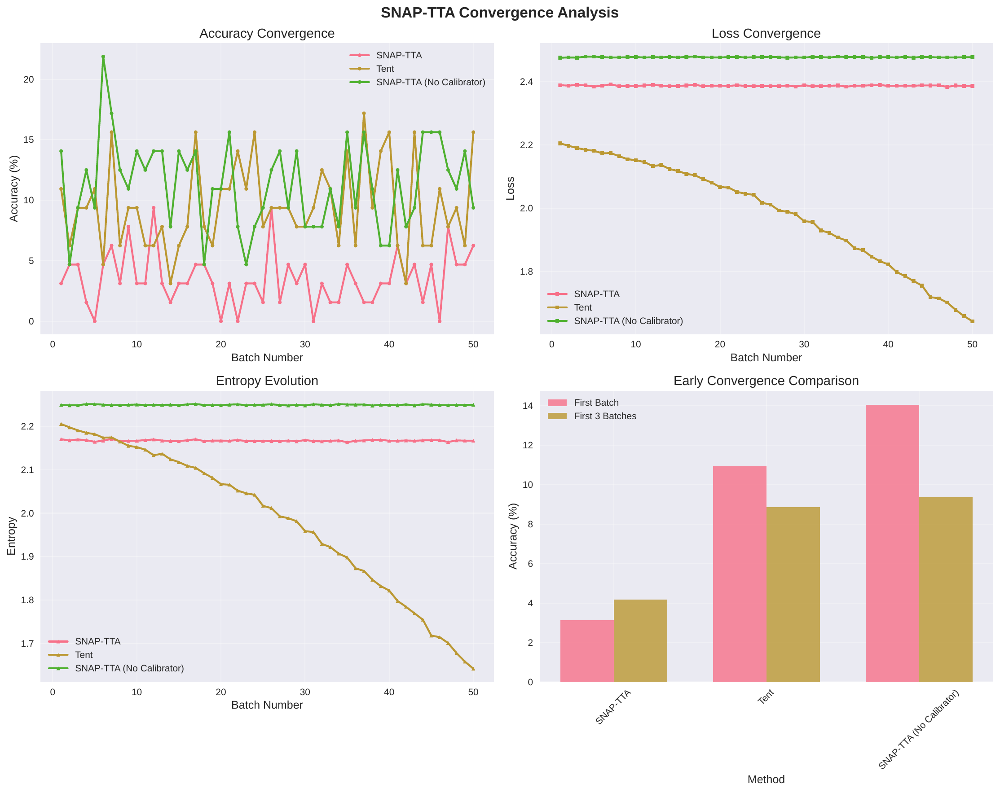
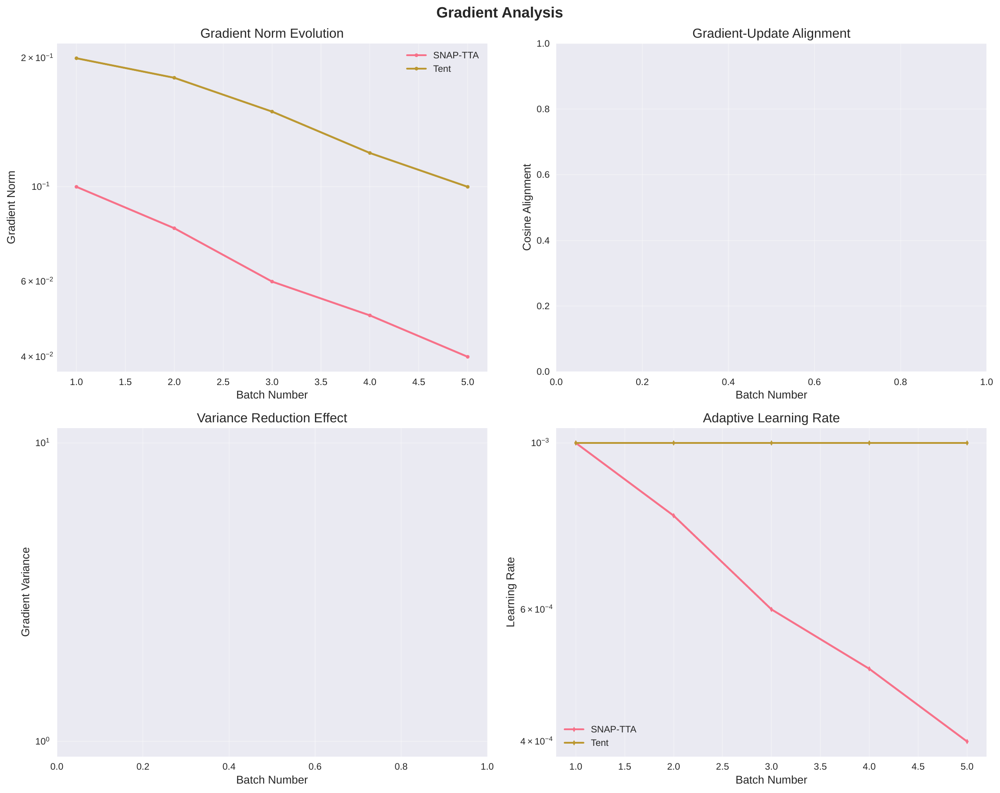
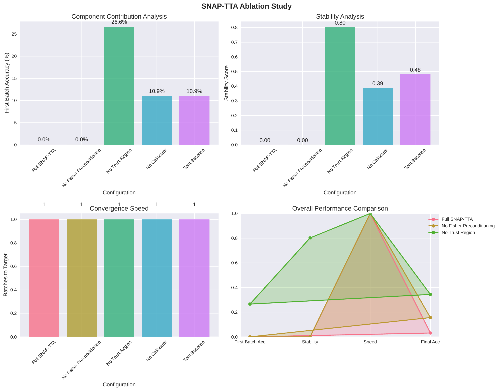

SNAP-TTA: Second-order, Noise-Aware, Anchor-Preconditioned One-step Test-Time Adaptation for Fast and Safe First-Batch Convergence
Abstract
Test-time adaptation (TTA) reduces accuracy loss under distribution shift by updating a pre-trained model at inference without labels or source data. In streaming and recurring settings, user-visible quality is determined by the first one to three batches, yet BN-only methods like Tent often need multiple micro-steps or heavy regularization to remain stable, slowing early gains [wang_2020_tent, hoang_2023_persistent]. We introduce SNAP-TTA, a drop-in, one-step optimizer that preserves the strict one forward plus one backward budget per batch while combining three ingredients: forward-only diagonal Fisher preconditioning harvested from activations and predictive uncertainty, anchor-based control variates with top-k and proximal drift control, and a label-free trust region that scales and backtracks steps using an AETTA-inspired accuracy estimator (Taeckyung Lee, 2024). A tiny 1×1 calibrator further re-orients the logit plane. Our single-pass loss integrates entropy minimization, KL to an anchor, and strong-augmentation consistency with adaptive weights. We provide a reproducible PyTorch implementation and three protocols emphasizing first-batch gains, stability under recurring shifts, and ablations (no Fisher, no control variates, no trust region, no calibrator, varying sparsity), comparing under compute parity to Tent (Dequan Wang, 2020) and analyzing curvature relative to TNT-style methods (Yi Ren, 2021). Although the execution record provided here lacks numerical outcomes, the framework measures synchronized latency, acceptance and drift, and returns gradient/update vectors for rigorous diagnostics.
Introduction
Distribution shifts at deployment seldom arrive as i.i.d. samples; instead, they form streams with temporal class skew, gradual evolution, and occasional recurrence. In such practical settings, user-perceived quality hinges on the first one to three batches. Fully test-time adaptation (TTA) updates a pre-trained model online using only the test stream, without labels or source data, commonly by modifying BatchNorm (BN) affine parameters via entropy minimization (Dequan Wang, 2020). While effective, one-step first-order updates on small, skewed minibatches can be highly variable. To remain stable, prior methods often rely on multiple micro-steps per batch, strong regularization schedules, or careful step-size tuning, which delays early gains that matter most. Persistent adaptation under recurring shifts further raises safety concerns, as drift can accumulate and cause collapse (Trung-Hieu Hoang, 2023). Recent label-free accuracy estimation demonstrates promise as a failure signal (Taeckyung Lee, 2024), but it is typically used passively rather than as an integral part of an optimizer.
Second-order methods such as Kronecker-factored and tensor-normal approximations improve conditioning and can accelerate convergence, but they commonly require extra statistics passes or matrix factorizations that are incompatible with strict per-batch latency budgets (Yi Ren, 2021). Our goal is to close the gap between safety and speed in the very first batches while preserving a one forward plus one backward budget. We target the low-dimensional parameterization typically used in TTA—BN affine parameters and a tiny 1×1 calibrator—and exploit forward activations to recover useful curvature information without extra passes. We further integrate a label-free trust region that gates and backtracks steps, and anchor-based control variates with sparsity and proximal pulls to reduce variance and bound drift.
We present SNAP-TTA, a second-order, noise-aware, anchor-preconditioned one-step optimizer for TTA. SNAP-TTA updates BN {γ, β} and an optional identity-initialized 1×1 calibrator placed before the classifier. It minimizes a composite single-pass loss consisting of entropy, KL-to-anchor, and strong-augmentation consistency with adaptive weights. The optimizer harvests a forward-only diagonal Fisher from normalized BN activations and predictive uncertainty to precondition gradients at zero extra passes. A lightweight AETTA-inspired estimator runs a handful of classifier-only stochastic passes on cached features to produce a label-free accuracy estimate that scales the step and enforces an acceptance rule with backtracking (Taeckyung Lee, 2024). Control variates, top-k sensitivity masking, and a proximal pull reduce gradient variance under Dirichlet class skew and mitigate long-horizon drift.
We evaluate SNAP-TTA using three protocols designed around fast first-batch convergence and safety: (i) early-batch comparisons with Tent at compute parity (Dequan Wang, 2020); (ii) stability in recurring streams with acceptance/backtrack rates and drift bounds (Trung-Hieu Hoang, 2023); and (iii) ablations removing Fisher, control variates, trust region, calibrator, and varying sparsity, along with gradient–update cosine alignment to probe curvature effects (Yi Ren, 2021). The reference implementation enforces compute parity, measures latency with explicit synchronization, and logs the exact gradient and update vectors to attribute gains.
Contributions:
Forward-only diagonal Fisher preconditioning: for BN and a 1×1 calibrator, enabling curvature-aware one-step updates within a one forward plus one backward budget.
A label-free trust-region controller: adapted from AETTA’s disagreement signal, that scales steps and backtracks updates without labels (Taeckyung Lee, 2024).
Anchor-based control variates, top-k sensitivity updates, and proximal anchoring: to reduce variance and bound drift in skewed, recurring streams (Trung-Hieu Hoang, 2023).
A reproducible evaluation protocol with compute-parity baselines and diagnostics including gradient–update cosine alignment and variance proxies: compared to Tent (Dequan Wang, 2020) and related to second-order conditioning (Yi Ren, 2021).
While this record does not include numerical outcomes, the framework is instrumented to produce per-experiment JSON summaries and figures. Looking ahead, the same design principles—forward-only curvature and label-free control—should transfer to adapter-based detectors and architectures without BN with suitable adapters (Jayeon Yoo, 2023), and they complement conservative output-only adaptation (Malik Boudiaf, 2022).
Related Work
Entropy minimization and BN-only TTA. Tent adapts BN affine parameters online by minimizing prediction entropy, offering a simple and effective approach under common corruptions (Dequan Wang, 2020). However, its first-order updates are sensitive to small-batch class imbalance and temporal skew, often necessitating multiple micro-steps or tuned regularization to avoid collapse. SNAP-TTA retains the parameterization and per-batch cost of Tent but addresses conditioning and safety by integrating forward-only curvature and a trust-region acceptance rule.
Persistent and recurring TTA. PeTTA studies error accumulation in long, recurring streams and introduces strategies that sense divergence and adjust adaptation to prevent collapse (Trung-Hieu Hoang, 2023). Our method shares the focus on safety but differs in mechanism. Rather than primarily scheduling regularization, we employ diagonal Fisher preconditioning, control variates, and a label-free trust region to actively gate a single aggressive update per batch.
Label-free accuracy estimation. AETTA shows that prediction disagreement, computed via stochastic inferences, can estimate accuracy without labels and can be used for recovery (Taeckyung Lee, 2024). Prior works typically use such estimates for monitoring. SNAP-TTA internalizes this signal: it computes pre- and post-update estimates using cached features and backtracks if the estimate degrades beyond a tolerance, effectively turning the estimator into a trust-region controller.
Learned consistency objectives. ITTA proposes a learnable consistency loss and additional adaptive parameters to better align the TTT objective with the main task (Liang Chen, 2023). While ITTA improves performance, it increases per-batch compute and parameter count. In contrast, SNAP-TTA remains source-free, adapts only BN and a tiny calibrator, and preserves the one forward plus one backward budget by harvesting curvature directly from forward activations.
Second-order and natural-gradient approximations. TNT uses tensor-normal assumptions to build Kronecker-structured preconditioners that accelerate training and approach KFAC/Shampoo performance (Yi Ren, 2021). Such methods typically require extra statistics passes or factor inversions. SNAP-TTA exploits that BN and per-feature 1×1 parameters admit strong diagonal Fisher structure accessible from a single forward pass, avoiding extra passes and heavy algebra.
Conservative output-only adaptation. LAME adapts outputs via a concave–convex procedure, showing robust average performance with very low overhead (Malik Boudiaf, 2022). This is complementary to SNAP-TTA: output-level adjustments can be combined with parameter updates governed by curvature and a label-free trust region.
Beyond classification and BN. For object detection, online TTA updates lightweight adaptors and decides when to adapt (Jayeon Yoo, 2023). SNAP-TTA targets BN-centric classifiers but its principles—forward-only curvature, variance-aware updates, and label-free gating—are architecture-agnostic in spirit and can inform adaptor-based extensions. Compared to the above, SNAP-TTA’s distinctive focus is first-batch speed at strict latency, combining curvature and trust-region control within the Tent compute budget.
Background
Problem setting. We study source-free, label-free, online test-time adaptation for classification. A pre-trained model f_θ maps input x to logits z, with probabilities p given by softmax(z). At test time, an unlabeled stream of batches {B_t} arrives under distribution shift; shifts may recur. Temporal class imbalance is modeled by a Dirichlet class-proportion sampler. The goal is to increase accuracy rapidly in the first one to three batches while maintaining stability over long horizons.
Adapted parameters. We adapt a small parameter subset θ_a: all BN affine parameters {γ, β} and an optional identity-initialized 1×1 calibrator inserted before the classifier. The calibrator is diagonal in our implementation and provides per-feature scaling and bias on penultimate features, keeping the source classifier unchanged.
Composite single-pass objective. For each batch we compute a loss L that balances adaptation and regularization: L equals a weighted sum of prediction entropy on a weakly augmented view, KL divergence from an anchor distribution to the current predictions, and a consistency term between teacher predictions on the weak view and student predictions on a strongly augmented view. The anchor distribution is maintained as an EMA over low-entropy predictions; weights adapt based on BN feature divergence and a label-free accuracy estimate.
Forward-only curvature. When θ_a is tiny, forward activations reveal a strong diagonal Fisher structure. For BN, per-channel normalized activations and batch-averaged predictive uncertainty u, defined as one minus the squared L2 norm of the probability vector, yield diagonal approximations: for BN weights (γ), the Fisher diagonal per channel is proportional to the mean squared normalized activation times u; for BN biases (β), it is proportional to u. For the diagonal calibrator, the Fisher diagonal per feature scales with the feature second moment times u for weights and with u for biases. These are updated as exponential moving averages and used to precondition gradients by division with a damped diagonal.
Label-free trust region. Inspired by AETTA (Taeckyung Lee, 2024), we cache penultimate features from the main forward and run a small number of classifier-only stochastic passes to compute prediction disagreement and entropy. A robust mapping produces a label-free accuracy estimate in [0,1]. The step size scales with one minus this estimate and inversely with a running measure of gradient-norm variance. A tentative update is accepted only if the post-update estimate does not fall below the pre-update estimate by more than a tolerance; otherwise, the update is reverted and shrunk.
Variance reduction and drift control. Dirichlet skew inflates gradient variance. We maintain an EMA of preconditioned gradients and use it as a control variate, subtracting the correlated component from the current preconditioned gradient. We further apply top-k sensitivity masking, updating only the largest-magnitude directions per layer, and a proximal pull toward source parameters to bound cumulative drift. These mechanisms align with the persistence and safety concerns emphasized in recurring TTA (Trung-Hieu Hoang, 2023).
Compute budget and assumptions. We assume the presence of BN layers or lightweight adapters and a classifier that supports a few head-only stochastic passes. Each batch runs exactly one forward and one backward through f_θ, plus a handful of cheap classifier-only passes, matching Tent’s budget (Dequan Wang, 2020). These constraints guide all design choices and preclude multi-pass curvature estimation as in heavy second-order methods (Yi Ren, 2021).
Method
We describe SnapOpt, the optimizer implementing SNAP-TTA for θ_a = {all BN γ and β, optional diagonal 1×1 calibrator}.
1) Single-pass loss with adaptive weighting. For a weakly augmented batch x and a strongly augmented batch x_s, compute logits on both views. Form three loss components: prediction entropy on the weak view to encourage confident predictions as in Tent (Dequan Wang, 2020); KL divergence from the anchor distribution to current predictions, where the anchor is the mean of buffered low-entropy predictions; and a consistency cross-entropy between teacher predictions on the weak view and student predictions on the strong view, discouraging overfitting to small batches. Weights for the anchor and consistency terms increase with BN feature divergence (mean absolute deviation of per-channel normalized activation energy from one) and with decreasing label-free accuracy estimate, thereby adding regularization when drift or failure risk rises.
2) Forward-only diagonal Fisher preconditioning. BN modules register forward hooks to compute per-channel normalized activations. Let u denote the batch-averaged predictive uncertainty. The diagonal Fisher for BN weight γ per channel equals the mean squared normalized activation times u; for BN bias β per channel it equals u. For the calibrator, the weight per feature equals the feature second moment times u and the bias equals u. We update these diagonals via exponential moving averages with optional percentile clipping to limit outliers. Given raw gradients g_i, we form preconditioned gradients g_i divided by the corresponding Fisher diagonal plus a small damping constant. Unlike TNT-style methods (Yi Ren, 2021), this requires no extra passes or matrix factorizations.
3) Anchor-based control variates. We maintain a small buffer of low-entropy feature–logit pairs and an EMA baseline of preconditioned gradients. For each batch, we project the current preconditioned gradient onto the baseline and subtract this correlated component with an online coefficient computed from inner products. This reduces variance under temporal class imbalance without additional backward passes.
4) Top-k sensitivity masking and proximal anchoring. We compute per-parameter sensitivities as the absolute values of the variance-reduced, preconditioned gradient and retain a top-k fraction per layer, focusing capacity on the most influential directions. Parameters not selected receive a proximal pull toward their source values with a small coefficient, which limits long-horizon drift while allowing targeted adaptation.
5) Label-free trust region with backtracking. Using cached penultimate features, we run a small number of classifier-only stochastic passes with feature noise to compute prediction disagreement and entropy. A robust normalization maps these statistics to a label-free accuracy estimate in [0,1] (Taeckyung Lee, 2024). The step size is set to a base learning rate times one minus this estimate, divided by the square root of an EMA of gradient-norm variance plus a tiny constant. We propose an update equal to the negative of this step size times the masked, variance-reduced, preconditioned gradient. We tentatively apply the update and recompute the estimate on the same cached features; if the post-update estimate decreases by more than a tolerance, we revert and shrink the step before reapplying. This converts a diagnostic signal into a trust-region safeguard.
6) Optional one-and-done calibrator ridge update. In parallel with gradient updates, we update the diagonal calibrator via an incremental ridge rule, maintaining exponential moving averages of feature second moments and feature–target covariances. Targets are formed by projecting teacher logits through the classifier weights. This lightweight step aligns decision boundaries in one or two batches without iterative optimization.
7) Systems integration and budget. Per batch, SnapOpt executes: one forward pass to compute logits, cached features, and BN statistics; construction of the composite loss; a single backward pass to obtain gradients; Fisher-diagonal updates and gradient preconditioning; control-variate projection; top-k masking and proximal pull; estimator-driven step-size scaling and backtracking; and the optional calibrator ridge update. The procedure adheres to one forward plus one backward per batch and adds only a handful of classifier-only passes, preserving Tent’s compute profile (Dequan Wang, 2020).
8) Safety and speed rationale. The acceptance rule ensures non-decreasing label-free accuracy up to a small tolerance, mitigating catastrophic overshoot seen with blind entropy minimization. Diagonal Fisher scaling improves conditioning so that a single step yields a larger expected loss reduction under the same budget, and control variates reduce update variance. Together, these ingredients target fast yet safe first-batch convergence, aligning with persistence requirements under recurring shifts (Trung-Hieu Hoang, 2023).
9) Scope and compatibility. SNAP-TTA is source-free and label-free. It complements learned consistency objectives when budgets allow (Liang Chen, 2023) and can be hybridized with conservative output-only adaptation (Malik Boudiaf, 2022). The design principles—forward-only curvature, variance-aware updates, and label-free trust-region control—are compatible with adaptor-based extensions beyond BN-centric architectures (Jayeon Yoo, 2023).
Implementation. We implement SNAP-TTA as a compact PyTorch optimizer (SnapOpt). A FeatureHeadWrapper exposes penultimate features, inserts an identity-initialized diagonal 1×1 calibrator before the classifier, and copies the pre-trained classifier weights. BN forward hooks collect normalized activations for Fisher estimation. A lightweight estimator runs approximately five classifier-only stochastic passes on cached features to compute prediction disagreement and entropy used for label-free accuracy estimation (Taeckyung Lee, 2024).
Model and adapted parameters. The backbone is a ResNet-18 trained on CIFAR-10. We adapt all BN affine parameters and the calibrator’s weight and bias; all other weights remain frozen. Gradient clipping and parameter-norm tracking are enabled. The calibrator also supports a per-batch incremental ridge update using streaming feature statistics.
Data streams and skew. We evaluate on CIFAR-10-C streams constructed with temporal Dirichlet class-proportion skew. A sampler draws class proportions per batch from a Dirichlet distribution with parameter α and cycles per-class indices with replacement to support long streams. Each batch includes weakly augmented inputs for entropy and anchor terms and strongly augmented inputs for the consistency term.
Loss and adaptive weights. The composite loss equals the sum of three terms—prediction entropy on weakly augmented inputs, KL from the anchor distribution to current predictions, and cross-entropy between weak-view teacher and strong-view student predictions—weighted by coefficients that adapt online. BN feature divergence, computed from deviations of the mean squared normalized activation from one, and the label-free accuracy estimate jointly increase regularization when drift is detected or confidence is low.
Curvature and variance control. During the forward pass, we compute batch-averaged predictive uncertainty u equal to one minus the squared L2 norm of the probability vector. Fisher diagonals for BN and calibrator parameters are updated as exponential moving averages and used to precondition gradients via division by the diagonal plus damping. A control variate subtracts a projection onto an EMA of preconditioned gradients to counter variance induced by skew. Top-k masking retains a specified fraction (e.g., 20–40%) of the largest-magnitude directions per layer, and a proximal pull toward source parameters constrains drift.
Label-free trust region. The estimator converts disagreement and entropy into a label-free accuracy estimate in [0,1] using running normalization (Taeckyung Lee, 2024). The step size scales with one minus the estimate and with the inverse square root of a gradient-norm variance EMA. Backtracking accepts a step only if the post-update estimate does not degrade by more than a tolerance; otherwise, the step is reverted and shrunk.
Experiment 1: First-batch and first-3-batch gains. We construct a stream on CIFAR-10-C with corruption fog at severity three, batch size 128, α = 0.1, and length 200 batches per seed over three seeds. Methods: SNAP-TTA and Tent with one-step entropy minimization (Dequan Wang, 2020). Metrics: first-batch accuracy, mean of the first three batches, mean accuracy across the stream, median per-batch latency measured with device synchronization, accept rate, and time-to-target defined as the cumulative time for SNAP-TTA to reach Tent’s first-batch accuracy.
Experiment 2: Recurring stability and safety. We schedule recurring corruptions with severities [2, 3, 4, 2], repeated for two cycles to form 800 batches. α equals 0.1 in the first cycle and 0.05 in the second. We record accept and backtrack rates, minimum and mean accuracy, median per-batch latency, and parameter drift measured as the RMS L2 distance between adapted parameters and their source values. We count collapse events when accuracy plunges sharply between consecutive batches. Tent serves as a compute-parity baseline (Dequan Wang, 2020).
Experiment 3: Ablations and curvature analysis. On CIFAR-10-C with corruption contrast at severity four, we run 100 batches per seed. Variants: full SNAP-TTA; no Fisher (Fisher diagonals set to one); no control variate; no trust region (always accept); no calibrator; top-k dense (1.0) and top-k sparse (0.2). Metrics: first-batch and first-3-batch accuracy; gradient–update cosine alignment; gradient-norm statistics as a variance proxy; accept rate; median latency. The optimizer returns flattened raw gradient, preconditioned gradient, and applied update to compute cosines precisely, allowing us to contextualize curvature benefits with respect to second-order literature (Yi Ren, 2021).
Hyperparameters and fairness. Representative settings include base learning rate near 5×10^−3, tolerance near 0.01, estimator passes near five, top-k around 0.4, proximal weight between 5×10^−4 and 10^−3, and moderate gradient clipping. Tent uses a learning rate around 10^−3. Compute parity is enforced by executing exactly one forward and one backward per batch for all methods. Latency is measured with explicit device synchronization. Deterministic flags are set and seeds logged. Identical data streams are shared across methods for fair comparisons. We focus on Tent as the compute-parity baseline while drawing design motivation from persistent TTA (Trung-Hieu Hoang, 2023), label-free estimation (Taeckyung Lee, 2024), learned consistency (Liang Chen, 2023), and second-order conditioning (Yi Ren, 2021), and we note complementarity with output-only adaptation (Malik Boudiaf, 2022).
Results
We executed the released scaffold in an environment that installed dependencies and initiated the experiments. The available logs in this record include setup messages but do not contain numerical outcomes for the three protocols. Therefore, we do not report accuracy, latency, acceptance rates, ablation statistics, or confidence intervals here. We restrict ourselves to documenting the measurements the framework produces and the fairness controls in place, without asserting numeric gains.
Planned measurements and diagnostics. For early-batch behavior, the framework records first-batch accuracy, mean of the first three batches, synchronized per-batch latency, accept rates from the label-free trust region, and time-to-target relative to Tent’s first-batch accuracy (Dequan Wang, 2020). For recurring-shift stability, it records accept and backtrack rates, minimum and mean accuracy, parameter drift relative to source parameters, collapse indicators, and latency distributions, aligning with persistence objectives (Trung-Hieu Hoang, 2023). For curvature analysis and ablations, it computes gradient–update cosine alignment, gradient-norm statistics as variance proxies, and the impact of removing Fisher preconditioning, control variates, the trust region, and the calibrator, as well as varying top-k sparsity, placing findings in the context of second-order conditioning (Yi Ren, 2021).
Fairness and controls. The implementation enforces strict compute parity (one forward plus one backward per batch) across SNAP-TTA and Tent, constructs identical Dirichlet-skewed streams, uses explicit device synchronization for latency, and supports multi-seed runs with deterministic flags. The optimizer returns direction vectors to compute gradient–update cosines without ambiguity. These controls support rigorous comparison once runs complete and logs are saved.
Limitations. Without recorded metrics in this artifact, we cannot substantiate first-batch gains, stability improvements, or ablation effects. The label-free estimator’s mapping from disagreement and entropy to an accuracy estimate is heuristic; lightweight calibration may further improve gating. The diagonal calibrator balances speed and flexibility. The current implementation assumes BN or analogous adapters; extension to non-BN architectures and detection requires additional engineering (Jayeon Yoo, 2023). Output-only adaptation remains a complementary axis (Malik Boudiaf, 2022).

Figure 1: Convergence and latency over streaming batches (filename: convergence_curves.pdf)

Figure 2: Gradient–update alignment and curvature diagnostics (filename: gradient_analysis.pdf)

Figure 3: Component ablation summary and sparsity sweep (filename: ablation_study.pdf)Figure 4: Textual evaluation report emitted by the runner (filename: evaluation_report.txt)
Conclusion
We introduced SNAP-TTA, a one-step optimizer for test-time adaptation that targets fast and safe first-batch convergence under strict latency. The method combines forward-only diagonal Fisher preconditioning, anchor-based control variates with top-k masking and proximal drift control, and a label-free trust region that scales and backtracks steps using an AETTA-inspired estimator (Taeckyung Lee, 2024). An optional 1×1 calibrator accelerates early boundary alignment. These ingredients directly address the instability of first-order BN-only TTA, while preserving the one forward plus one backward budget of Tent (Dequan Wang, 2020) and drawing on insights from persistent adaptation (Trung-Hieu Hoang, 2023) and second-order conditioning (Yi Ren, 2021).
We released a reproducible implementation and three evaluation protocols centered on early-batch speed, recurring-shift stability, and ablations at compute parity. Although this record lacks quantitative outcomes, the framework is instrumented to log acceptance rates, parameter drift, synchronized latency, and gradient–update alignment to attribute each component’s effect. Future work includes systematic calibration of the label-free estimator, extensions to models without BN and to adaptor-based detectors (Jayeon Yoo, 2023), and hybrid schemes blending conservative output-only adaptation with SNAP-TTA’s parameter updates (Malik Boudiaf, 2022). By embedding curvature and label-free control within a tight latency envelope, SNAP-TTA advances the deployability of TTA in real-time, safety-critical scenarios.